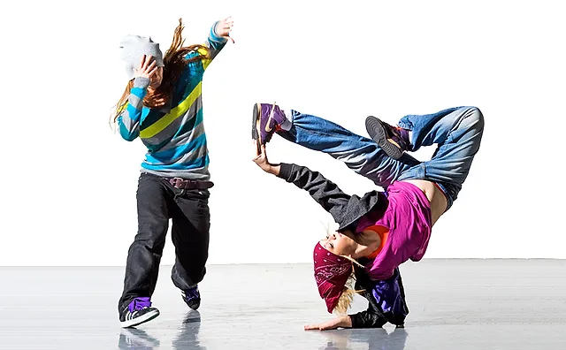
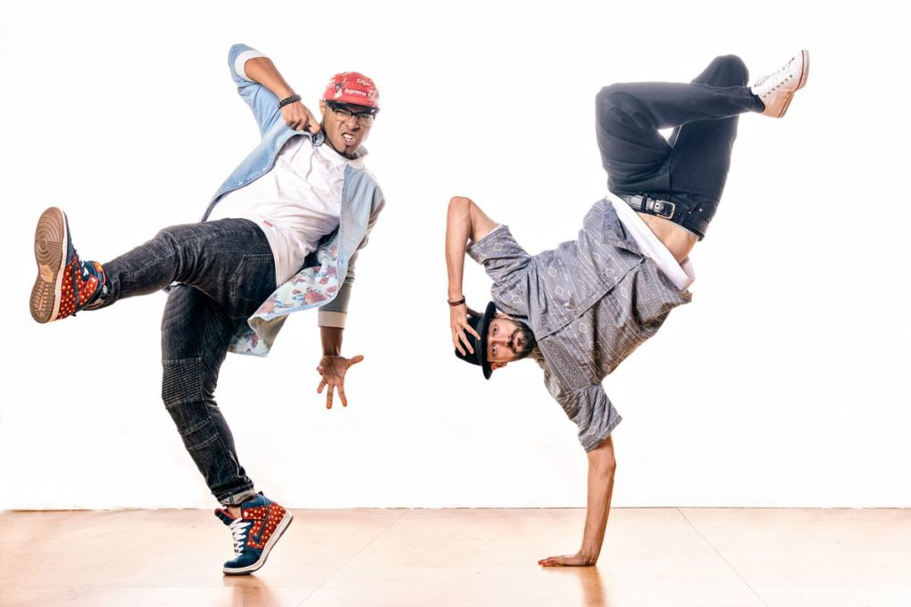

Hip hop dance is a range of street dance styles primarily performed to hip hop music or that have evolved as part of hip hop culture. It is influenced by a wide range of styles that were created in the 1970s and made popular by dance crews in the United States. The television show Soul Train and the 1980s films Breakin', Beat Street, and Wild Style showcased these crews and dance styles in their early stages; therefore, giving hip-hop dance mainstream exposure.
 